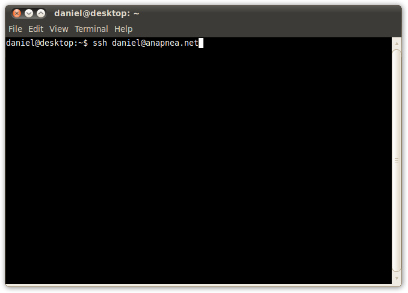
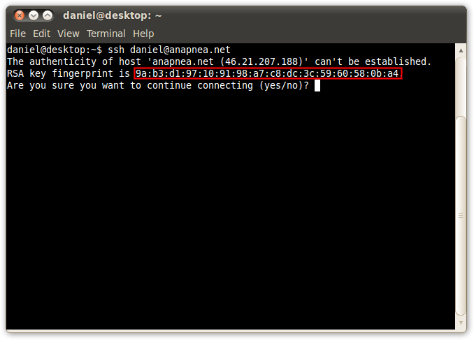
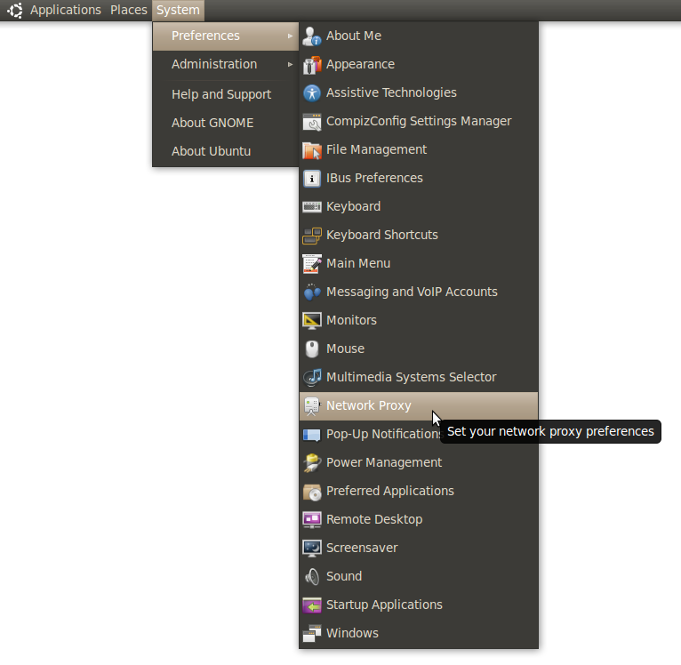
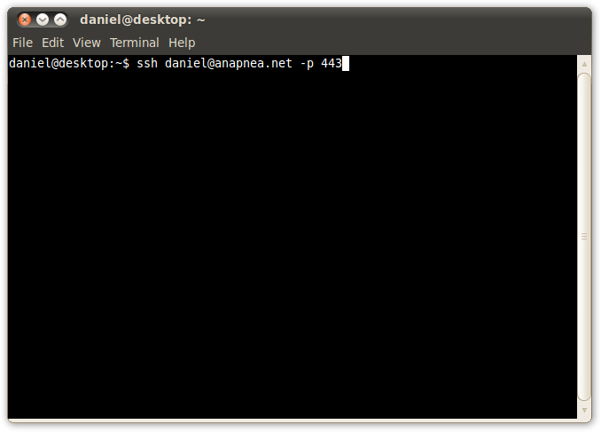

If you've got an Anapnea account then you're either already familiar with the unix command line, or soon will be.
Type ssh yourusername@anapnea.net. This runs the ssh command, passing yourusername@anapnea.net
as the only argument.

If you want to tunnel over ssh, then you will need to open a dynamic tunnel, using the -D9090 flag.
This flag tells ssh to open a SOCKS server on port 9090 and tunnel traffic through your ssh connection.
Here, I type ssh yourusername@anapnea.net -D9090 and then open a SSH connection as normal.
You will need to leave this terminal open since the ssh program is keeping your tunnel open for you.


Finally, set up your browser to use the SOCKS tunnel. The menu that you have to go through to find a dialogue similar to the
one below will differ for each OS, but it shouldn't be too hard to find. A screenshot of how to find the one for Ubuntu
is shown below. Once you've found it, enter localhost:9090 as the SOCKS proxy and close the dialogue.
Prefences menu with Network Proxy hilighted" />
